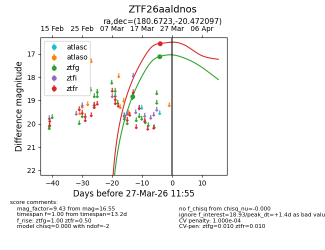
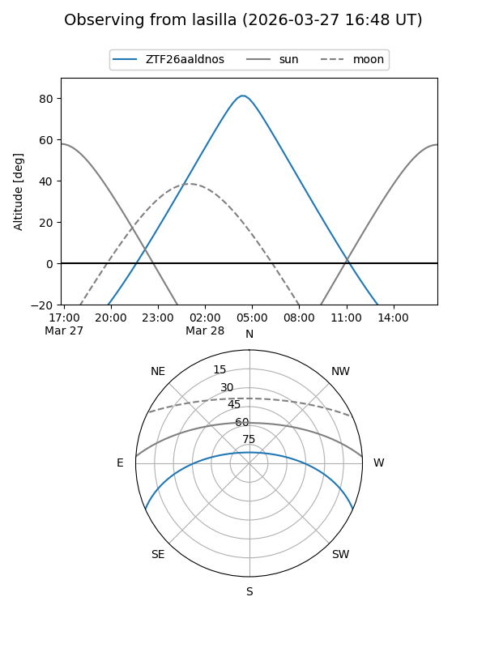
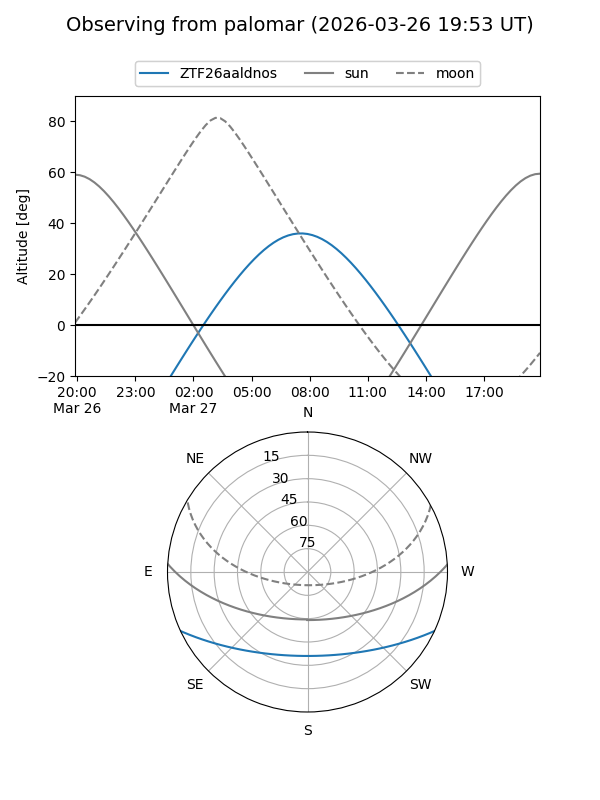
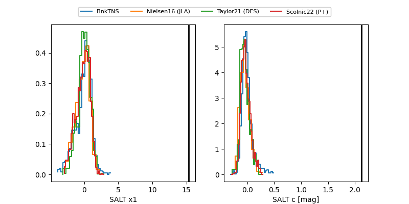

ZTF26aaldnos
Target ZTF26aaldnos at 2026-03-27 11:58
Aliases and brokers:
FINK: link
Lasair: link
ALeRCE: link
alt names
ZTF26aaldnos (ztf,fink_ztf)
Coordinates:
equatorial (ra, dec) = 180.6723,-20.47210
equatorial (HMS+DMS) = 12:02:41.36,-20:28:19.55
galactic (l, b) = (287.7500,+40.95812)
Flags:
likely cv
Photometry:
last ztfg=17.11, ztfr=16.55
2 ztfg, 1 ztfr detections
Lightcurve

Visibility


Additional plots
